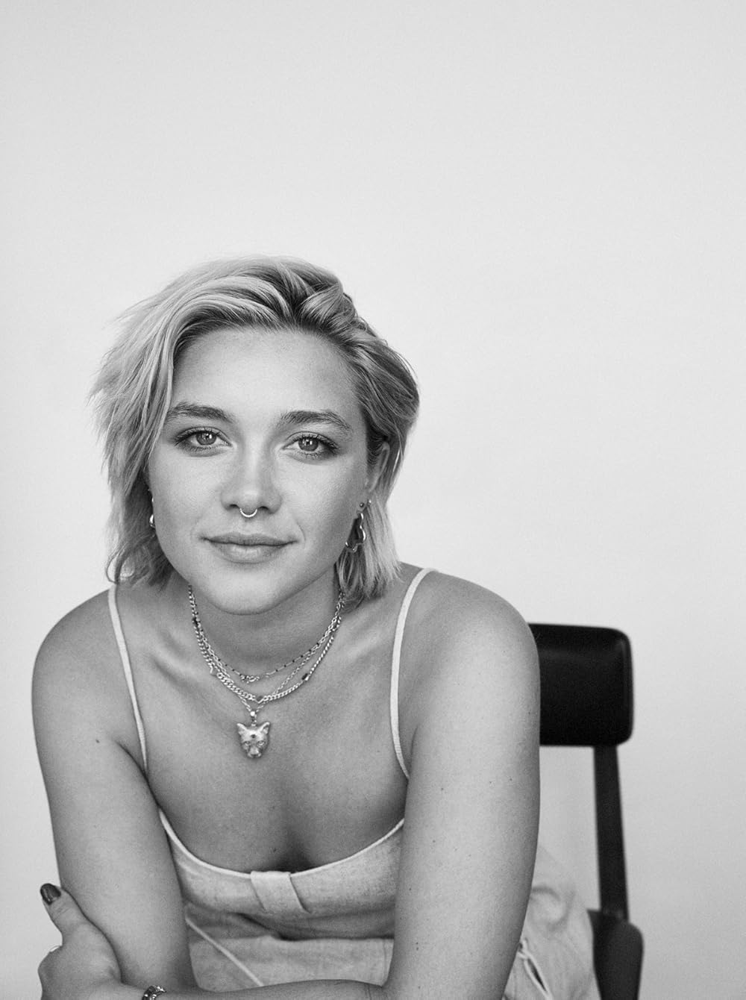
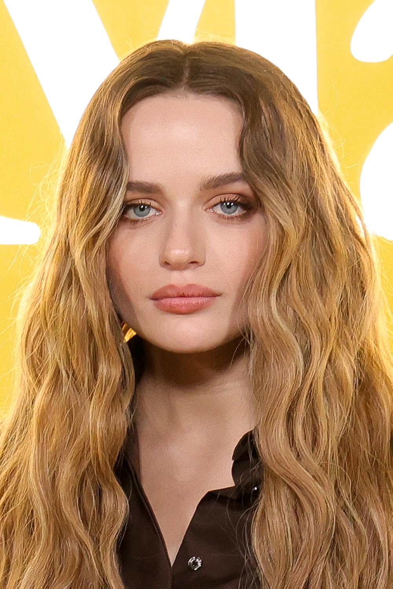
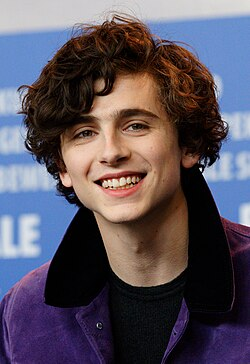

JACOB ELORDI
-Age: 28
-Known for: The Kissing Booth, Euphoria, Priscilla, Saltburn
-Why he stands out: He combines romantic charm with a darker, more complex side; he transitioned from teen heartthrob to top-tier dramatic actor.
ZENDAYA
-Age: 29
-Known for: Euphoria, The Greatest Showman, Challengers, Spider-Man
-Why she stands out: She masterfully blends drama, tenderness, and strength in her characters; she is one of the most versatile and beloved young actresses.
NOAH CENTINEO
-Age: 29
-Known for: To All the Boys I’ve Loved Before, The Perfect Date, Sierra Burgess Is a Loser
-Why he stands out: He's the epitome of the romantic, charismatic guy in Netflix teen comedies.



FLORENCE PUGH
-Age: 29
-Known for: Little Women, Midsommar, Don’t Worry Darling
-Why she stands out: She possesses tremendous dramatic intensity and brings realism and emotion to the romances she portrays.
JOEY KING
-Age: 26
-Known for: The Kissing Booth, The In-Between, Bullet Train
-Why she stands out: She grew up in front of the camera and became one of the most beloved young actresses in teen romance.
TIMOTHEE CHALAMET
-Age: 29
-Known for: Call Me by Your Name, Little Women, Dune
-Why he stands out: He combines sensitivity and depth in his roles; he became an icon of modern romance for his natural and emotional acting style.